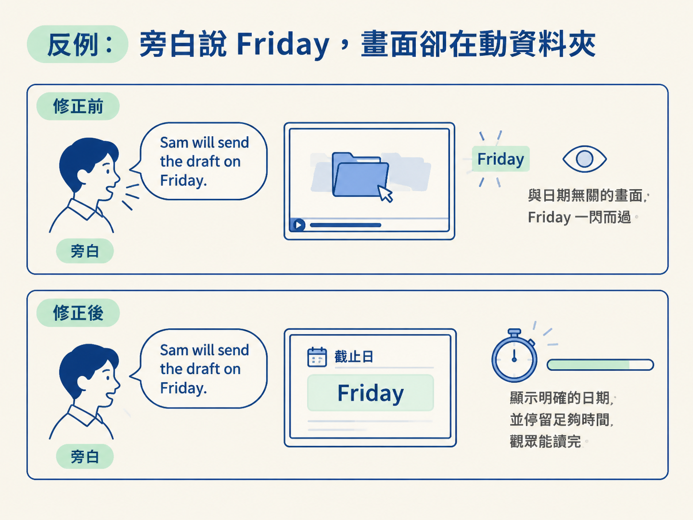

上一節你拿到一份 cues 分鏡，裡面每個 beat 都寫了「畫面出現什麼」以及「觀眾該注意什麼」。這一步要把它和旁白放在一起檢查，決定每個 beat 應該保留，還是需要修改。
你要處理的拉扯很具體：一邊是「好看」，另一邊是「有用」。漂亮的動畫和流暢的轉場當然可以保留，但如果畫面沒有幫觀眾理解旁白，甚至搶走重要文字的注意力，那它就該讓位。
這一步的輸入，是上一節產生的 cues 分鏡與旁白；輸出，是一份審過、修正後的分鏡計畫。AI 可以先協助找出畫面與旁白對不上的地方，你則要實際播放、逐句檢查，確認畫面真的回答了觀眾正在聽到的內容。
畫面不是不能漂亮，而是「漂亮」不該成為它唯一的任務。同一個 beat 可以只是讓畫面不單調，也可以在關鍵時刻幫觀眾理解旁白。判斷差別，就看觀眾看完這一格後，有沒有多懂一點剛才聽到的話。
| 面向 | 裝飾性的 beat | 有工作的 beat |
|---|---|---|
| 它的目的是 | 讓畫面不單調、看起來活潑 | 回答這一刻旁白正在講的問題 |
| 和那句話的關係 | 可有可無，換一句話也成立 | 只對這句話成立，錯過就可能聽不懂 |
| 拿掉的後果 | 幾乎沒有影響 | 觀眾可能漏掉一個關鍵資訊 |
| 什麼時候該留 | 有餘裕，而且不會擠壓重要畫面時 | 只要那句旁白需要它，就必須保留 |
重點不是把所有裝飾都刪掉，而是當裝飾和重要資訊搶同一個時刻時，讓有工作的畫面優先。例如，一顆會動的資料夾很可愛；但如果同一秒旁白正在交代「截止日是 Friday」，資料夾就可能佔用觀眾讀字的注意力。
你不必背一長串規則。讀每個 beat 時，只要對著正在播放的那句旁白問自己：
「如果我是觀眾，光看這個畫面，能回答我正在聽到的那個問題嗎？」
這個問句的作用，就像把耳朵和眼睛放在同一張檢查表上。答案是「可以」，這個 beat 通常就能保留；答案是「不行」，或是畫面會把觀眾帶到別的地方，就需要修改。
實際檢查時，先讓旁白播放，再一句一句往後讀 cues 分鏡。這是你的主要工作：確認畫面和聲音是否同步。AI 可以協助提出修改方向，但最後仍要由你檢查播放結果，因為文字看起來對得上，不代表實際播放時真的看得懂。
來看 Sam 的例子。旁白念到：
Sam will send the draft on Friday
這句話的重點是「截止日在星期五」。但分鏡在這一格安排的是一段裝飾性的資料夾動畫，它沒有說明日期，也沒有幫觀眾理解 Sam 何時會寄出草稿。
這就是「畫面沒有回答聽到的話」。畫面看起來可能很順，卻把觀眾的注意力帶到資料夾，讓真正該記住的 Friday 一閃而過。
修正方向很清楚：請 AI 把這個 beat 改成在對應的 phrase 顯示截止日，接著由你檢查播放結果。重要文字不能只放上去就算完成，還要留足夠時間讓觀眾讀完。如果 Friday 只出現半秒，即使位置排對了，觀眾仍然可能來不及讀。
你可以把修改後的結果想成最後要交出的畫面：旁白說到 Friday 時，觀眾眼前真的看得到 Friday，而且有足夠時間把它讀進去。若最後流程會輸出影片檔，就要在影片播放時再次確認這個文字沒有一閃而過。

這條規則也不是「看到裝飾就刪掉」。如果某個裝飾 beat 正好落在旁白沒有需要交代資訊的緩衝時刻，它就可能從干擾變成合理的喘息。
例如，旁白暫時沒有交代日期、人物或動作，觀眾也不需要在那一刻讀懂新的資訊，那段動畫就有機會留下。但仍然要回到同一個判準：這一刻觀眾需不需要看懂什麼？需要，就讓畫面工作；不需要，裝飾才有位置。
當好看和有用搶同一個時刻，先保留有工作的畫面。用一句話判斷：「光看這個畫面，能回答我正在聽到的那個問題嗎？」不能，就修改；能回答，而且重要文字也停留得夠久，才算通過。
當每個 beat 都能回答這個問題，你就完成了分鏡審查。下一步要把審過的句子對到實際測得的時間，讓每個 cue 的時間碼真正落在錄音上。